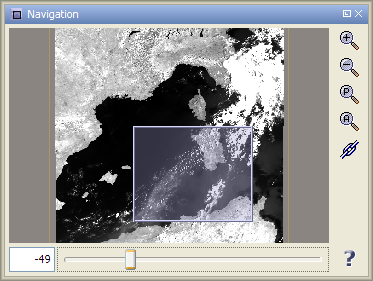
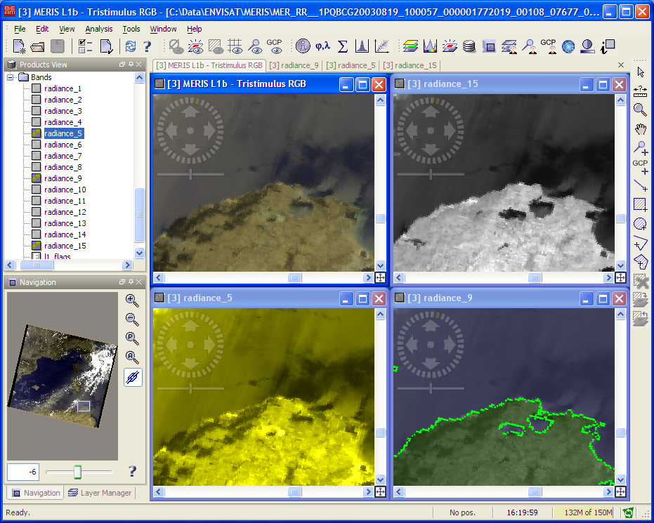

| The Navigation Window |
|
The Navigation Window is used to move the viewport of an Image View, to zoom in and out of it and to rotate the image in steps of 5 degrees using the spinner control below the image preview. The current viewport is depicted by a semi-transparent rectangle which can be dragged in order to move the viewport to another location. It also provides a slider used to zoom in and out of the view:

The text box at the left side of slider can be used to adjust the zoom factor manually.
You can enter decimal value which sets the zoom factor of the view to this value.
Also you can enter the zoom factor in the same format as it is displayed.
The Navigation window additionally provides the following features via its tool buttons:
 Zoom In:
Zooms in by a factor of 1.2.
Zoom In:
Zooms in by a factor of 1.2.
 Zoom Out:
Zooms out by a factor of 1/1.2.
Zoom Out:
Zooms out by a factor of 1/1.2.
Zoom Actual Pixel: Sets the zoom factor to the default value so that the size of an image pixel has the same size of a display pixel.
 Zoom All:
Adjusts the viewport to cover the entire image.
Zoom All:
Adjusts the viewport to cover the entire image.
 Synchronise Views:
Synchronises the viewports of all compatible image views.
Synchronise Views:
Synchronises the viewports of all compatible image views.
 Synchronise Cursor:
Displays a synchronised cursor on all opened image views.
Synchronise Cursor:
Displays a synchronised cursor on all opened image views.
The following image shows VISAT with four image views that have been arranged with the Tile Evenly command of the Window menu. With synchronisation enabled, all image views use the same viewport:
